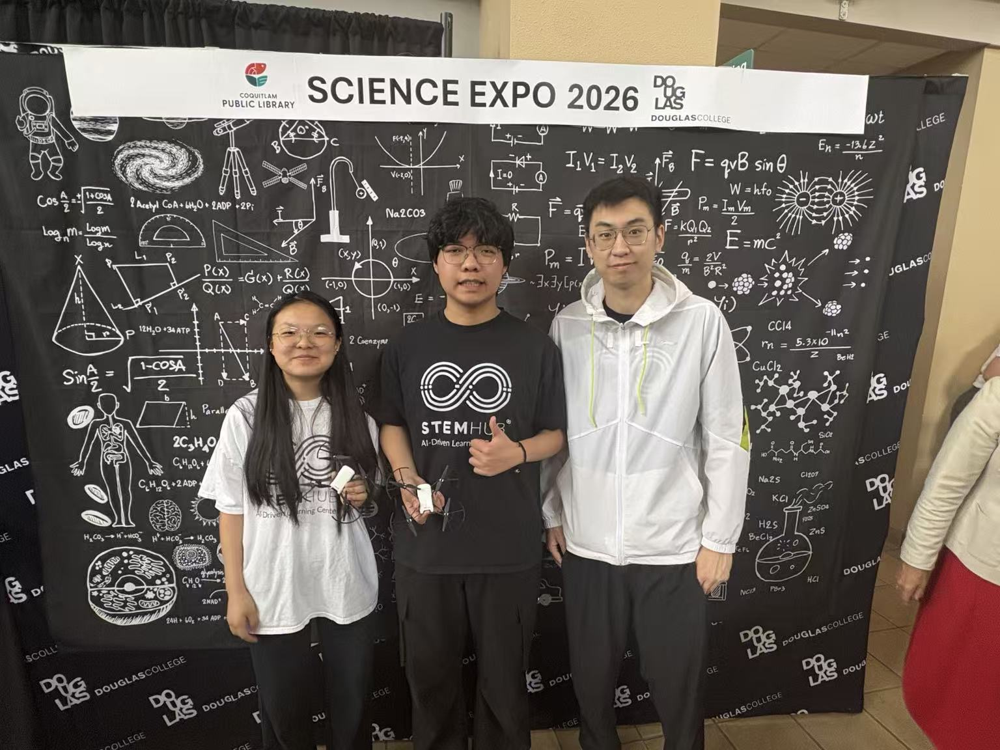

Team projectScience Expo 2026
Drone Control and AI Vision Project
Collaborated with a team to build an interactive drone-control system. We used code on a computer to send commands that controlled the drone’s movement, rotation, flips, and camera. We also integrated AI to generate descriptions of images captured by the drone. In a further experiment, we used the drone camera to detect hand gestures and translate them into movement commands.
